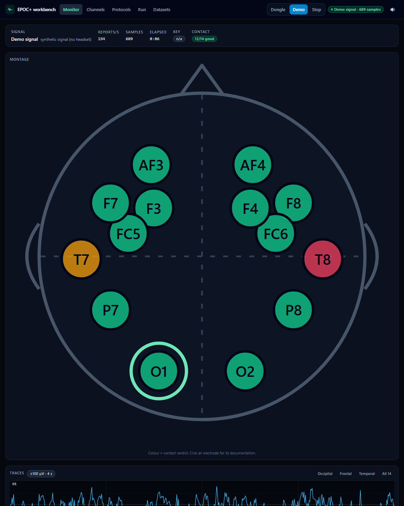

Emotiv EPOC+ · open-source driver
Emotiv gates raw data behind a ~$1,068/year licence — and encrypts the USB stream to enforce it. This reads it anyway.
MIT · credited to the emokit authors · not affiliated with Emotiv
